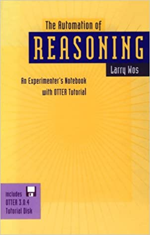

The Applications
by Michael Kinyon

Logic
- JAR paper, 2001
- Single axioms for propositional logic
- Meredith's single axiom
- Proof simplifications
- Blocking double negations
- Shortest single axioms
- Single axioms for equivalential calculus
- Disproofs
- The hard XCB case
- Combinatory logic, the kernel strategy, open problems
- Axiomatizations for non-classical logics
- Axiomatization for RM→
- Axiomatization for implicational fragments of S4 and S5
Tarskian Geometry
- IJCAR paper, 2014
- Not the first in the area
- Proofs of four challenges
- Proofs of Hilbert's axioms
Proof Simplification
- The Book, 2003
- Background
- A mathematician's perspective, ala Paul Erdös
- First proofs are often ugly
- Hilbert's 24th problem
- How to measure elegance
- Number of comparable inference steps
- Forward vs. backward vs. mixed steps
- Restrictions on inference rules, e.g., no demodulation
- Graph complexity, with Rüdiger Thiele
- Clause size (vs. proof length), e.g., Robbins algebra proof
- "Pure" proofs
- Techniques
- Ancestor subsumption (by proof length)
- Constraints to enforce limits on measures
Pure Proofs
- JAR paper, 1995
- What?
- Set of formulae S1 ... Sn
- Prove Si+1 from Si, and S1 from Sn, without prove any other Sj
- Challenge is to avoid the Sj
- Not possible for 13 shortest single axioms for equivalential calculus
- Found for any permutation of the 4 Moufang identities
- Might have been motivated by advisor, Reinhold Baer
Miscellaneous
- A Book, 1997
- A finite semigroup with an antiautomorphism but no involutions (helpful)
- Jordan rings (failure)
- Ternary Boolean algebra (success)
- Job-shop scheduling (optimization)
- Combinatorial logic, problems by Smullyan (fun)